Persona. Hana Mori is a parent. The office at Chapel Hill Math Institute (chmi) has just added her and her son Ken (grade 3, no email). Ken is paired with the tutor Alex Chen, with a weekly lesson on Fridays at 4:00 PM in "Institute, room 2"; the first one is in two days. She is cohort C3 of docs/member-home-plan.md, the tutoring parent, whose question is "When's the next lesson, anything changed?". The office told her to install the app and sign in with hana.mori@example.com. She wanted to:
get in;
find Ken and his next lesson;
try playing with Ken, the home's way for a parent to practise with their child.
This is the app replay of the web journey J15 (J15-tutoring-parent-first-sign-in.md).
Outcome: 1/1 journeys passed, 0 skipped, 24 of 24 steps verified. Hana reached the journey's end:
Signing in took her straight into CHMI. There was no space chooser, no sign-up form and no approval wait (step 4).
A full-screen welcome offered the tour. She took it (8 stops), confirmed her details and was told "You're all set"
(steps 5-10).
Her home answered her question on one screen: "Ken's next lesson · Fri at 4:00 PM with Alex.", and Ken's card
under "Your children" (step 12).
"See the schedule" and "Dates" gave the place, Institute, room 2, and the first date, Fri, Nov 6 (steps 13-14).
One tap on Ken's card, "Practise together before Friday's lesson", made a game. "Start the Quest" started it
(steps 16-17).
The end state is not what the button promises, exactly as on the web. The game had one player, Hana:
Ken appears nowhere in the lobby, and he has no email, so he has no way to join.
The practice counted for her: "Hana wins! You won with 1 point. Fantastic!" (step 21).
After closing and reopening the app, Ken's card still says "Played 0 days this week (aim: 3)" (step 23, finding 1).
Conversion figures, counted from the app's first screen to the started game (steps 1-17). The address is typed into the developer sign-in, which stands in for the provider step; see the Appendix.
Measure
Count
Screens
10 distinct
Taps
20 (+2 scrolls and 1 swipe)
Typed fields
1 (the address, developer sign-in only)
Waits
2 (sign-in ~2 s, the countdown ~3 s)
Dead ends
0 before the feature; 0 after it
The 10 distinct screens were:
the guest home and the developer sign-in;
the full-screen Welcome, Confirm your details and You're all set;
the home, under the tour and then with the tour offered again;
the Schedule (in the Sessions tab);
the game lobby and the countdown.
Of the 20 taps:
12 went to onboarding: Take the tour, Next ×7, Finish, "Yes, that's all right", "Go to my dashboard", and No
thanks on the repeated offer;
3 were her lesson check: See the schedule, Dates and the Home tab;
3 were the developer sign-in: Sign in, the address field, Sign in (production: Sign in and one provider button);
2 were the path itself: Practise together and Start the Quest.
The shortest path on screen is 4 taps plus the provider step: Sign in, Skip for now, Practise together, Start the
Quest. "Skip for now" was not pressed in this run.
After the feature (steps 18-24): 6 taps (an answer, Submit, End the game now, End the game, Exit, Ken's card) and
one relaunch. Exit led straight back to the home.
The 3 screens Hana would notice most
Step 12: her home already knows Ken's lesson. "Good afternoon, Hana · CHMI · Ken: next Fri at 4:00 PM", then a
"Ken's next lesson" card and Ken's own card with "Practise together before Friday's lesson". Her question is answered on the first plain screen, with nothing to set up. This is the strongest moment of the journey. Neither card says where the lesson is (finding 5).
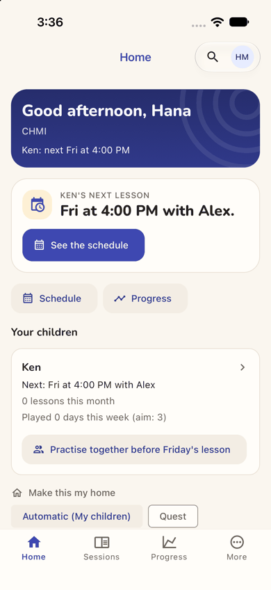
step 12
Step 16: "Practise together" makes a game without Ken in it. One tap gives a big code "RF9CK6", a QR code and a
share button, but the roster lists only "Hana (you)", "1 player · 1 of 2 places". Ken is beside her with no phone and no sign-in, so the code has no one to go to. The line above says "each on their own".
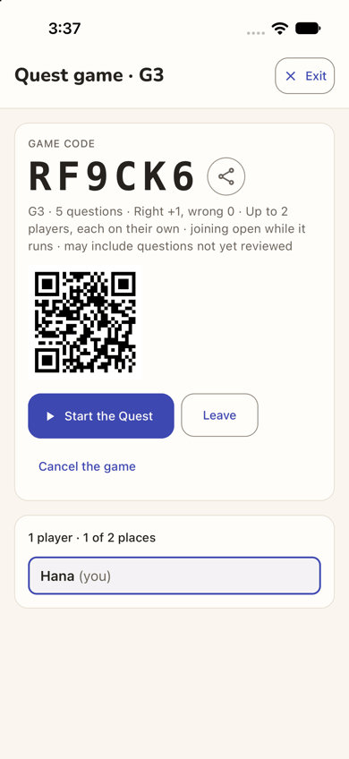
step 16
Step 23: after practising, Ken still has "Played 0 days". She and Ken answered a question together, and the
game ended "Hana wins!". After closing and reopening the app, Ken's card is unchanged and offers the same button again. The "aim: 3" is the card's reason to come back, and it cannot move for a child who cannot sign in.
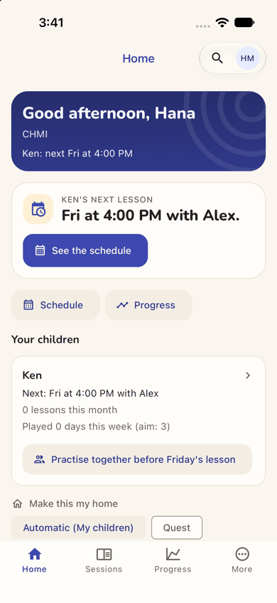
step 23
Contact sheet (all 24 phone steps):
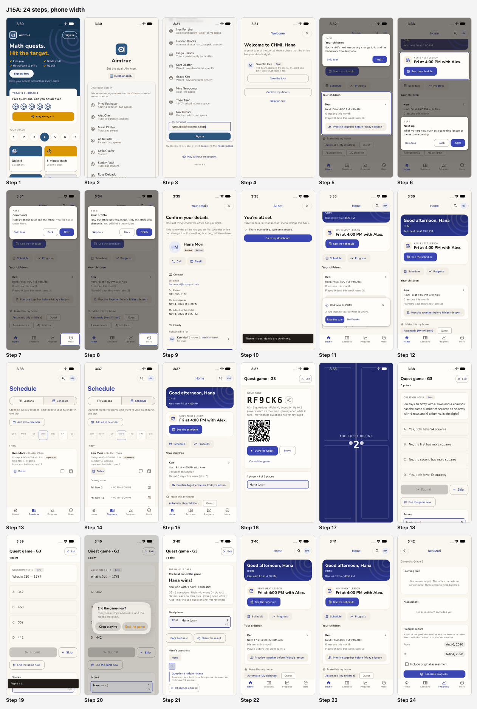
J15A contact sheet
Web and app. Compared with the web journey J15 (J15-tutoring-parent-first-sign-in.md, Nadia Hassan), the app runs the same steps with the same words, and avoids three of the web's problems:
Getting in. On the web, "Sign in" opened a dialog titled "Sign up free" (a sev2 there). In the app it opens a
sign-in screen headed by the brand. Here that screen was the developer variant, so the production buttons were not seen. The guest home is the same children's game, with no word of the centre (finding 4).
The welcome. The app's welcome is a full screen and hides the home. On the web it was a dialog over a home that
already showed the lesson. The words are the same: "portal", and "The dashboard and the menu".
The tour. It has the same 8 stops and the same first two. On the phone web, stops 3-8 all lit one hamburger
icon. The app lights the real tab ("You will find it under More" or "under Sessions"), but that is still only two tabs for six stops (finding 3). Its card sits away from the lit part; the web's covered the Practise button.
The repeated tour offer. The All set screen now says where the tour lives ("in your account menu"). "Go to my
dashboard" still lands on the home, and the same "two-minute tour" offer follows at once. In the app it came once more, not twice: it did not return after the game or after a relaunch (finding 2).
The lesson. The home cards are the same. The Schedule sits in the Sessions tab, with a day strip and a labelled
"Dates" button. The date is readable ("from Nov 4", where the web wrote 2026-11-04). The way back is one tap on the Home tab; the web needed the 13-item menu.
The game. The lobby and its line are the same, word for word. The level was G3, which matches Ken's grade 3;
the web's grade-4 child was also given G3. "End the game now" asks to confirm; the web ended at once. The results fit the screen; the web's ran 40 px off (a sev1 there). Exit returns to the home, which fixes the web's sev2 (Exit went to "Question Quest").
Ken's card (app only). Tapping it opens Ken's Progress page: an empty learning plan and a report form
(finding 7). The web's equivalent link was not opened.
The end state is the same on both: the practice is Hana's, and Ken's card does not move.
Practise together starts a game Ken cannot join and credits Hana
Issue
Ken's card on the home offers one button, "Practise together before Friday's lesson". One tap makes a game for two (step 16), and that part is fast. But:
the lobby shows "1 player · 1 of 2 places" and only "Hana (you)". There is no "Ken invited", no "waiting for Ken",
and no word on how he joins;
the line under the code says "Up to 2 players, each on their own", which contradicts "together";
Ken has "No email" (her details, step 9), so he cannot sign in to use the code, the QR code or the share button
the lobby offers;
played on Hana's phone with Ken beside her, the game is hers. The scores list only her (steps 18-19), and the end
says "Hana wins! You won with 1 point. Fantastic!" (step 21);
back on the home, and again after closing and reopening the app, Ken's card still reads "Played 0 days this week
(aim: 3)". The same button is offered again, as if nothing had happened (steps 22-23).
Violation
cuj-contract, steps 16-23; success-criteria (the end state was re-checked after a relaunch at step 23). It also breaks:
Nielsen #1 Visibility of system status: whether the child was invited, and how he joins, is never shown;
Nielsen #2 Match between system and the real world: "Practise together" yields a game of one, "each on their
own".
Severity
The end state is wrong for this cohort, and the only workaround credits the wrong person: Hana plays
on her own phone while Ken watches.
C3's children are mostly young students the office adds without an email, so this is the normal case, not an edge
case.
The button exists to get the child practising before the lesson and to move his "aim: 3". It can do neither, so
the card's reason to come back (stickiness) fails from the first use.
The app behaves exactly like the web here (J15, finding 1): it is the same defect on both platforms.
Evidence
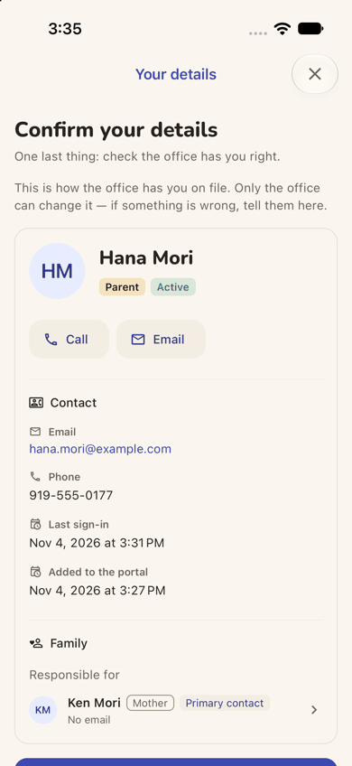
step 9step 16
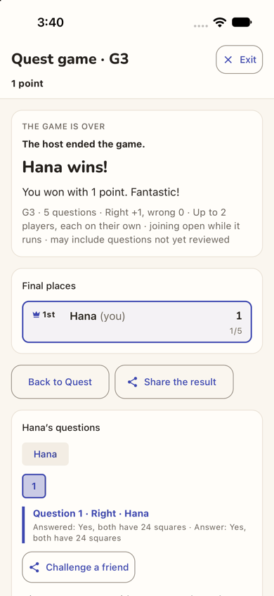
step 21step 23 Repro:
in the app, sign in as a parent whose child has no email and a lesson within the next days;
on the home, tap "Practise together before <day>'s lesson": the lobby lists only the parent;
tap Start the Quest, answer one question, then End the game now and End the game;
tap Exit, close and reopen the app: the child's "Played 0 days this week" is unchanged.
Fix
When the child cannot sign in, make the button start a game on this device, as the child: "Playing as Ken,
with Mum". His answers then count towards his days, and Hana is named as the helper, not the player.
When the child can sign in, list him in the lobby as "Ken — invited, not joined yet", and tell the parent where he
will see the invitation.
Until one of these exists, do not offer "Practise together" or "Play with" for a child who cannot join. Offer "Ask
the office to give Ken a sign-in" instead.
Name both players on the results ("Hana and Ken: 1 of 5"), not "Hana wins!". Fix web and app together, as the
parity rule requires.
sev2
The tour Hana has just finished is offered again at once over the Practise button
Issue
The welcome went well: the tour, then "Confirm your details", then "You're all set". After that:
the last screen's only button is "Go to my dashboard" (step 10), but it lands on her Home, not a dashboard;
at the same moment a card appears over the bottom of the home: "Welcome to CHMI — A two-minute tour of what is
where. Take the tour / No thanks" (step 11). She finished that same tour about a minute earlier;
the card sits over Ken's "Practise together" button, the one thing on the home she has not tried yet.
Counting the welcome, she was offered the tour twice in her first five minutes. Unlike the web, it did not come back after the game or after a relaunch.
Violation
cuj-contract, steps 10-11; Nielsen #1 Visibility of system status (her finished tour appears not to have been saved), and #4 Consistency and standards (a button named for one place goes to another).
Severity
An observable mismatch on her first visit, which costs a tap and hides the home's main button. For a
parent who opens the app once a week to check a lesson, an app that seems not to listen is a reason to stop opening it.
Evidence
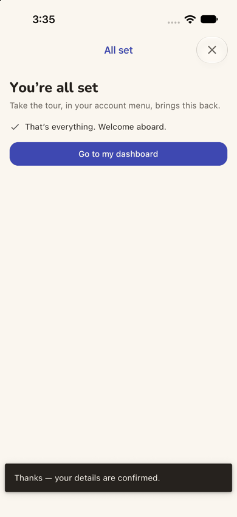
step 10
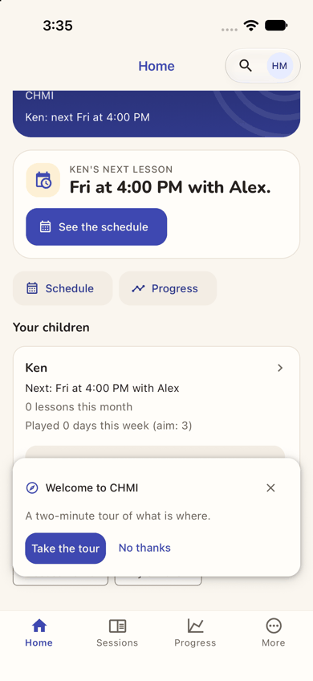
step 11 Repro:
in the app, sign in for the first time as a parent the office has added;
Take the tour, Next to the end, Finish, then "Yes, that's all right";
tap "Go to my dashboard": the home opens with the "two-minute tour" card over the child's card.
Fix
Count finishing the wizard's tour as having seen the tour, both for the person and on the device.
Rename "Go to my dashboard" to "Done" (she is on her Home), or "Go to my home".
Keep the offer away from the home's main actions when it does show.
sev2
Six of the eight tour stops point at two tabs and none at practising together
Issue
The welcome promises "A quick tour of the portal" and "The dashboard and the menu, one part at a time" (step 4). The app has a Home and a tab bar, and neither word is used anywhere else Hana looks. The tour's first two stops are about her home, "Your children" and "Next up", and they are good (steps 5-6). After that:
stops 3, 6, 7 and 8 (Dashboard, Billing, Comments, Your profile) all light the same More tab;
stops 4 and 5 (Sessions, Schedule) both light the Sessions tab (steps 7-8);
no stop covers "Practise together", "Played 0 days this week (aim: 3)", the "Make this my home" chips, Quest or the
Progress tab, which are the parts of her home that give her a reason to come back.
Violation
cuj-contract, steps 4-8; Nielsen #6 Recognition rather than recall (four names to remember behind one tab), and #2 Match between system and the real world ("portal", "dashboard", "menu" in an app).
Severity
Real friction in orientation. The tour costs her 9 taps, and the feature that matters for C3's
stickiness, practising with the child, is taught nowhere. It is better than the phone web, which lit one hamburger icon six times, but the gap is the same.
Evidence
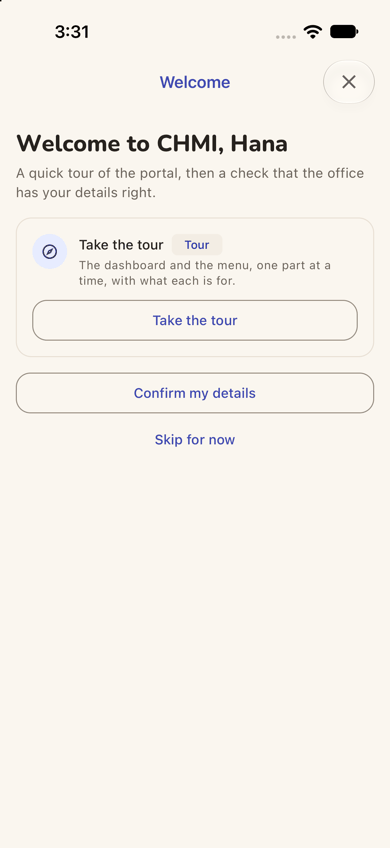
step 4
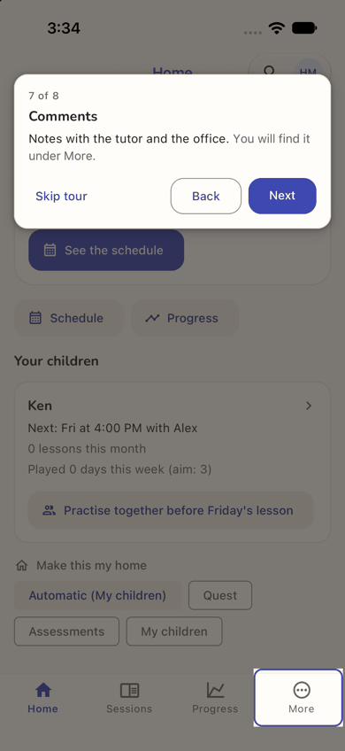
step 7
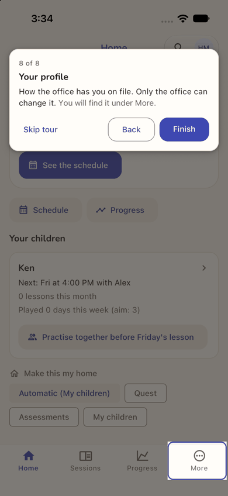
step 8 Repro: sign in to the app as a new parent, Take the tour, and Next through stops 3-8.
Fix
For a parent, tour the home's own blocks: Ken's card, "Practise together" (what it does, and that it counts
towards the child's 3 days), "See the schedule" and "Make this my home".
Give More one stop that opens it, and light each item inside in turn.
In the welcome, say "A quick tour of the app" and "Your home and the tabs", not "portal" and "the dashboard and
the menu".
sev1
The front door never mentions the tutoring centre
Issue
The office told Hana to install the app and sign in. The app opens on a children's maths game: "Aimtrue", "Math quests. Hit the target.", "Sign up free", "Today's 5 · Grade 4" (step 1). There is no word of Chapel Hill Math Institute, lessons, tutors or families of a centre. "Sign in" is a small outlined pill at the top right. The sign-in screen it opens is headed "Aimtrue · Set the goal. Aim true." (step 2). CHMI appears only after she has signed in (step 4).
Violation
cuj-contract, steps 1-2; Nielsen #2 Match between system and the real world.
Severity
She gets through, because "Sign in" matches what she was told, and the app does not show the web's
misleading "Sign up free" title. A less confident parent might wonder whether she has installed the right app.
Evidence
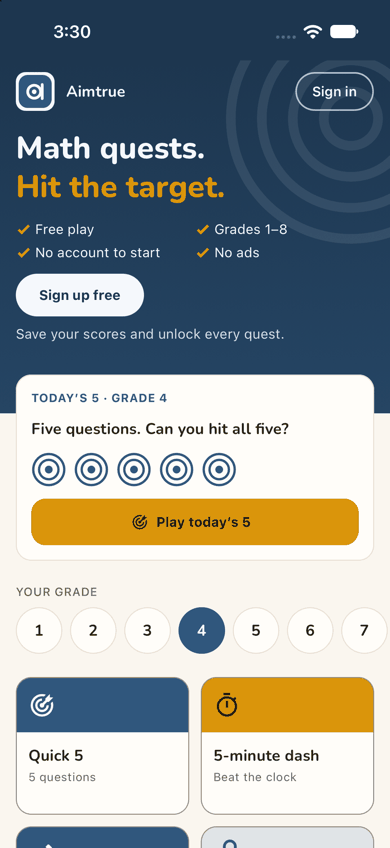
step 1
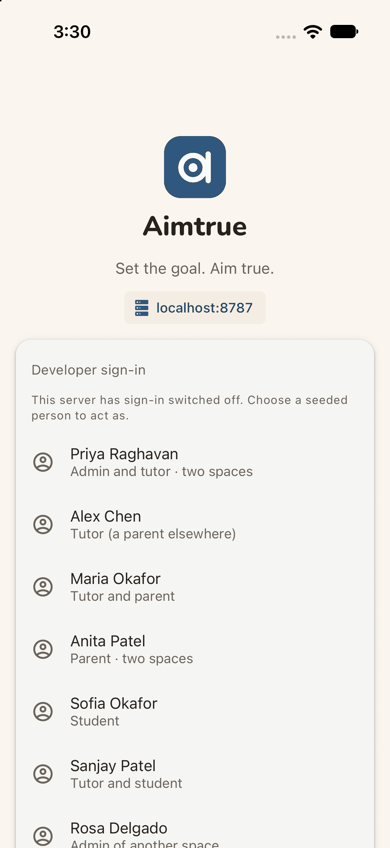
step 2 Repro: install the app and open it signed out.
Fix
On the guest home, under "Sign in" or above the fold, add one line for families of a space: "Lessons with a
tutoring centre? Sign in to see them."
On the sign-in screen, add: "Added by your tutoring centre? Use the account they have for you."
sev1
The next-lesson card says when but not where
Issue
The home's cards say "Fri at 4:00 PM with Alex." and "Next: Fri at 4:00 PM with Alex" (step 12). The lesson is in person, and the place, "Institute, room 2", appears only on the Schedule, one tap away (step 13). The first real date, "Fri, Nov 6", appears only behind "Dates" (step 14). On the schedule card:
"from Nov 4, ongoing" is the day the office set the series up, not a lesson;
the comment and calendar buttons are icons only, as is each coming date's cancel button.
Violation
cuj-contract, steps 12-14; Nielsen #6 Recognition rather than recall.
Severity
She found everything within two taps. Still, "where" is the next thing a new parent asks before the
first in-person lesson.
Evidence
step 12
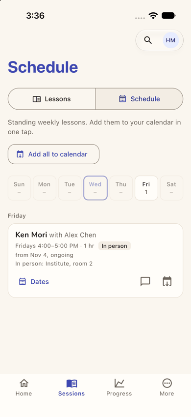
step 13
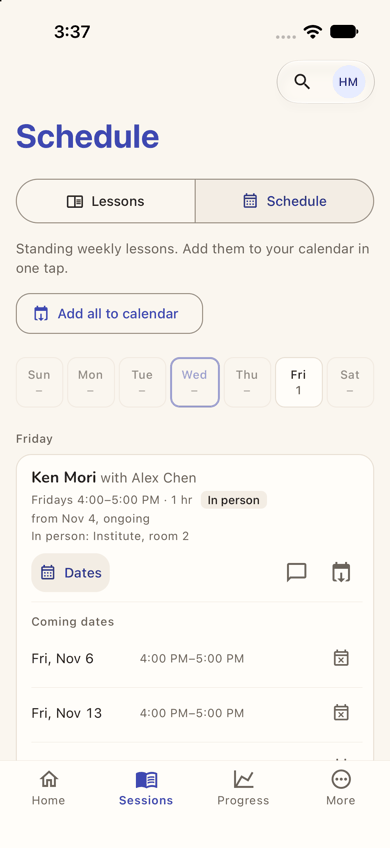
step 14 Repro: as a new parent, read the home's lesson cards, then tap See the schedule and Dates.
Fix
Add the place to both home cards: "Fri at 4:00 PM with Alex · Institute, room 2".
On the schedule card, show "Next: Fri, Nov 6", and write the start as "since Nov 4".
Give the icon buttons visible labels (Comment, Add to calendar, Cancel this date), as "Dates" already has.
sev1
The game speaks in codes and team words to a parent
Issue
For a game a parent started to practise with her child, the screens use game-builder words:
the title and rules line say "G3", not "Grade 3" (step 16);
"Right +1, wrong 0 · Up to 2 players, each on their own · joining open while it runs" (steps 16, 21);
"may include questions not yet reviewed", and a "Beta" badge on every question (steps 16, 18), tell a parent the
material may be wrong;
ending asks "End the game now? Every team stops where it is, and the places are given." for a game of one (step
20);
the results give "Final places" and "1st" (step 21).
Nothing let her see or change the level before the game existed. Here G3 matched Ken's grade 3.
Violation
cuj-contract, steps 16, 18, 20 and 21; Nielsen #2 Match between system and the real world.
Severity
Nothing is blocked, and the level suited Ken. The words cost trust: "not yet reviewed" makes a parent
wonder whether this is worth her child's time.
Evidence
step 16
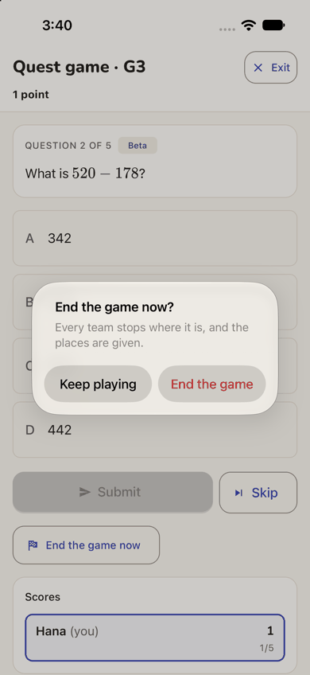
step 20 Repro: start a game from the home's Practise together, read the lobby, then tap End the game now.
Fix
Say the level in words ("Grade 3 · 5 questions"), and let the host change it before Start.
For a family game, drop "each on their own", "every team" and "places". Say "Some questions are new" instead of
"may include questions not yet reviewed".
sev1
Tapping Ken opens an empty progress report, not his lessons or play
Issue
Ken's card on the home has his name and a chevron, so it reads as "more about Ken". Its accessible name is "Ken's progress", and it opens the Progress tab's page for him (step 24): "Currently: Grade 3", "Learning plan: Not assessed yet. The office records an assessment, then a plan to work towards.", "Assessment: No assessment recorded yet.", and a "Progress report" form with From and To dates and a "Generate Progress" button. It shows nothing of his lessons, his days played, or practising together.
Violation
cuj-contract, step 24; Nielsen #2 Match between system and the real world, and #4 Consistency and standards (the chevron's target does not match the card it sits on).
Severity
Not blocking: the back arrow returns her to the home. But the first thing a new parent finds behind
her child's name is an empty record and a button to make a PDF of it.
Evidence
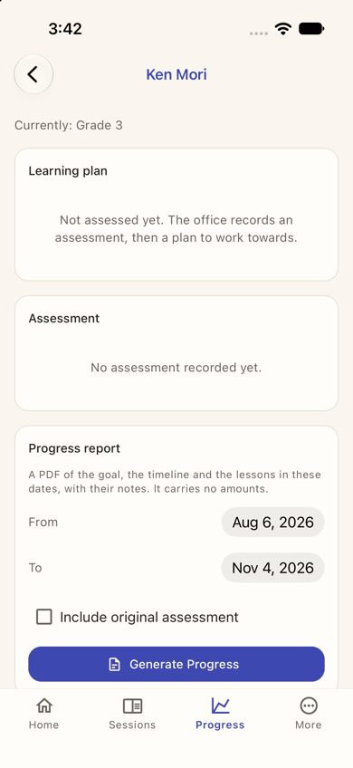
step 24 Repro: on a new parent's home, tap the child's card above its button.
Fix
Open a child page instead: the next lesson and where, the coming dates, the days played this week, and Practise
together. Put Progress on it as one section.
Or, if the card must open Progress, say so on it ("Progress ›"). Before an assessment exists, show "Alex will
assess Ken at his first lesson" rather than an empty report form.
Walkthrough
Step 1 — Launch the app fresh (landing) Expected: a front page with a way in for a family the centre has added. Observed: the guest home: "Aimtrue", "Math quests. Hit the target.", with Free play, Grades 1–8, No account to start and No ads. "Sign up free" is a white pill, with "Save your scores and unlock every quest." under it. "Sign in" is an outlined pill at the top right. Below are "Today's 5 · Grade 4", a grade row with 4 selected, and tiles. There is no word of Chapel Hill Math Institute, lessons or tutors. Dark mode is readable.Step 2 — Tap "Sign in" Expected: a sign-in screen. Observed: a full screen headed by the logo, "Aimtrue", "Set the goal. Aim true." and a server chip "localhost:8787". Below is the developer sign-in: "This server has sign-in switched off. Choose a seeded person to act as." and a list of seeded people. This screen exists only in development builds; production shows the provider buttons here. It is not judged.
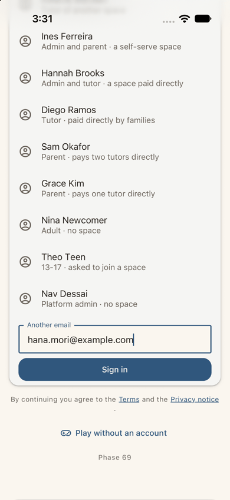
Step 3 — Scroll to "Another email" and type her address Expected: a field for her address. Observed: the field "Another email" holds hana.mori@example.com, above a filled Sign in button. Below are "By continuing you agree to the Terms and the Privacy notice", "Play without an account" and "Phase 69". Developer screen; it stands in for the one provider tap.Step 4 — Tap Sign in: Welcome to CHMI (landing) Expected: signed in, in the institute. Observed: after about 2 s, a full-screen "Welcome" with an X: "Welcome to CHMI, Hana · A quick tour of the portal, then a check that the office has your details right." Then a card, "Take the tour [Tour] · The dashboard and the menu, one part at a time, with what each is for.", with its button "Take the tour", then "Confirm my details" and "Skip for now". There was no space chooser, no sign-up form and no approval wait. The home is hidden behind the welcome. Dark mode is readable.
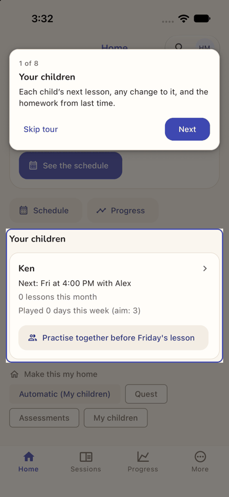
Step 5 — Take the tour: stop 1 of 8, Your children Expected: the tour explains her home. Observed: the home, dimmed, with "Your children" lit, and a card at the top: "1 of 8 · Your children · Each child's next lesson, any change to it, and the homework from last time." with Skip tour and Next. The lit card reads "Ken › · Next: Fri at 4:00 PM with Alex · 0 lessons this month · Played 0 days this week (aim: 3)" and has a tinted "Practise together before Friday's lesson" button. Below are "Make this my home" chips, and the tab bar Home, Sessions, Progress, More. The tour card does not cover the Practise button.
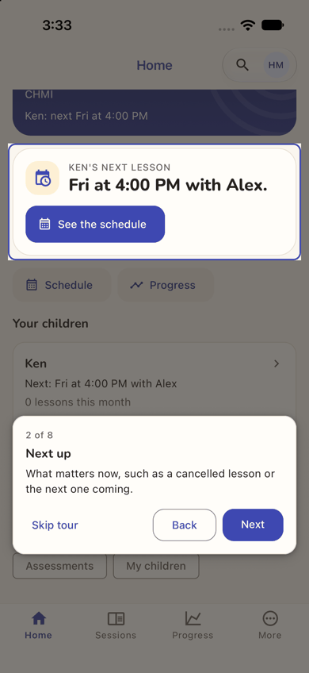
Step 6 — Next: stop 2 of 8, Next up Expected: the next part of the home. Observed: "2 of 8 · Next up · What matters now, such as a cancelled lesson or the next one coming." with Back and Next, now at the bottom. The lit card is "Ken's next lesson · Fri at 4:00 PM with Alex.", with See the schedule. Above it, the band reads "CHMI · Ken: next Fri at 4:00 PM". Match.Step 7 — Next ×5: stops 3 to 7 Expected: each stop shows its part of the app. Observed, one stop at a time: - 3 Dashboard: "Reflections, progress, recent lessons and what you owe. You will find it under More." (More lit); - 4 Sessions: "Every lesson with its notes, homework, reflections and assessments." (Sessions lit); - 5 Schedule: "Weekly lessons and calendar files. Away one week? Cancel just that date. You will find it under Sessions." (Sessions lit); - 6 Billing: "What each lesson costs, what you have paid, and what is outstanding. You will find it under More." (More lit); - 7 Comments: "Notes with the tutor and the office. You will find it under More." (More lit; the screenshot). Stops 3-6 were looked at on screen and are not embedded. Each lights the real tab, but that is two tabs for five stops. Nothing on the home itself is explained after stop 2.Step 8 — Next: stop 8 of 8, Your profile Expected: the last stop. Observed: "8 of 8 · Your profile · How the office has you on file. Only the office can change it. You will find it under More." with Skip tour, Back and Finish. More is lit, for the fourth time.Step 9 — Finish: Confirm your details Expected: the details check the welcome promised. Observed: a full-screen "Your details": "Confirm your details · One last thing: check the office has you right. This is how the office has you on file. Only the office can change it — if something is wrong, tell them here." The card shows: - Hana Mori, Parent, Active, with Call and Email buttons; - Contact: hana.mori@example.com, 919-555-0177, the last sign-in (3:31 PM), and "Added to the portal" (3:27 PM); - Family: "Responsible for Ken Mori · Mother · Primary contact · No email".Step 10 — Scroll, "Yes, that's all right" Expected: done. Observed: the toast "Thanks — your details are confirmed." and a full-screen "All set": "You're all set · Take the tour, in your account menu, brings this back. ✓ That's everything. Welcome aboard." The only button is "Go to my dashboard".Step 11 — Go to my dashboard (landing) Expected: the dashboard, or simply the home with nothing more to do. Observed: the Home, still scrolled where the tour left it (the greeting is hidden under the header). A new card sits over the bottom: "Welcome to CHMI · A two-minute tour of what is where. Take the tour / No thanks", with an X. It covers Ken's "Practise together" button. Dark mode is readable.Step 12 — No thanks, then scroll to the top Expected: her home. Observed: the whole parent story on one screen: - the band "Good afternoon, Hana · CHMI · Ken: next Fri at 4:00 PM"; - Next up "Ken's next lesson · Fri at 4:00 PM with Alex." with See the schedule; - quick actions Schedule and Progress; - "Your children": Ken, "Next: Fri at 4:00 PM with Alex", "0 lessons this month", "Played 0 days this week (aim: 3)" and "Practise together before Friday's lesson"; - "Make this my home": Automatic (My children), Quest. Neither card says where the lesson is.Step 13 — See the schedule Expected: Ken's lesson with its details. Observed: the Sessions tab, "Schedule", with a Lessons / Schedule switch, "Standing weekly lessons. Add them to your calendar in one tap.", Add all to calendar, and a day strip (Wed outlined, Fri 1). Under Friday: "Ken Mori with Alex Chen · Fridays 4:00–5:00 PM · 1 hr · In person · from Nov 4, ongoing · In person: Institute, room 2", with "Dates" and two icon-only buttons.Step 14 — Tap Dates Expected: the coming dates. Observed: "Coming dates": Fri, Nov 6 and Fri, Nov 13, each 4:00 PM–5:00 PM with a small cancel icon, and more below. Match.Step 15 — Home tab Expected: back to her home. Observed: the home at the top, as in step 12, in one tap.Step 16 — Practise together before Friday's lesson (landing) Expected: a game for Hana and Ken, with Ken shown as joining. Observed: within a second, a full-screen "Quest game · G3" with Exit, showing: - GAME CODE RF9CK6 with a share button; - "G3 · 5 questions · Right +1, wrong 0 · Up to 2 players, each on their own · joining open while it runs · may include questions not yet reviewed"; - a QR code; - Start the Quest, Leave and Cancel the game; - the roster: "1 player · 1 of 2 places · Hana (you)". Ken is not shown. The game was made in one tap, with no choice of level. Dark mode is readable.
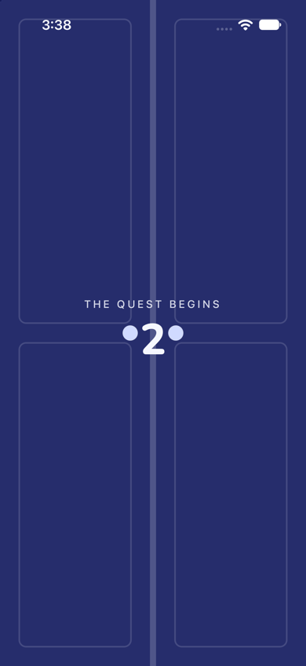
Step 17 — Start the Quest Expected: the game starts. Observed: full-screen indigo doors, "THE QUEST BEGINS" and a countdown ("2") between two door knobs. Play with has started.
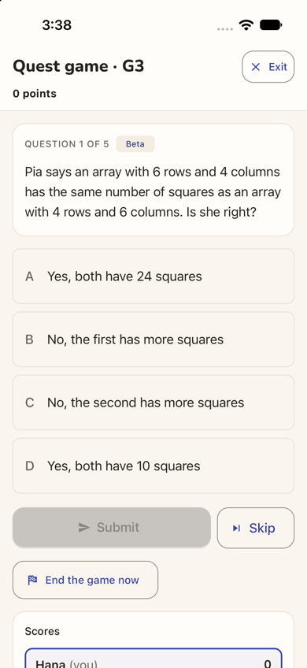
Step 18 — The first question Expected: a question for them both. Observed: after about 3 s, "Quest game · G3 · 0 points" and "QUESTION 1 OF 5 · Beta · Pia says an array with 6 rows and 4 columns has the same number of squares as an array with 4 rows and 6 columns. Is she right?", with four choices A-D, Submit (grey), Skip and End the game now. Scores list only "Hana (you) 0".
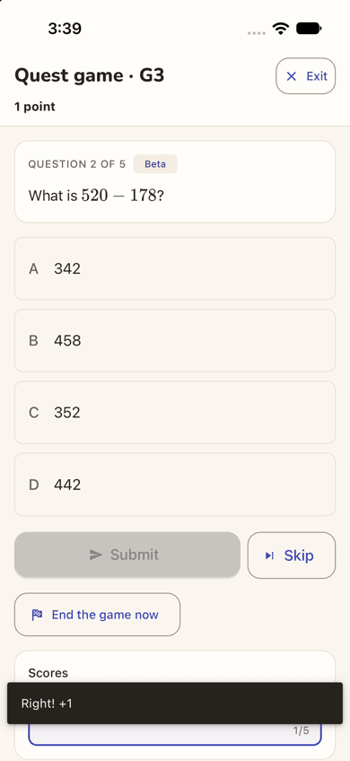
Step 19 — Choose A, Submit Expected: marked. Observed: the toast "Right! +1" (over the scores), "1 point", and question 2 of 5, "What is 520 − 178?". Match.Step 20 — End the game now Expected: a way to stop. Observed: an alert, "End the game now? Every team stops where it is, and the places are given.", with Keep playing and End the game (red). The web ended at once; the app asks.Step 21 — End the game Expected: a summary for the two of them. Observed: "THE GAME IS OVER · The host ended the game. · Hana wins! · You won with 1 point. Fantastic!", the rules line again, then Final places (1st Hana (you), 1, 1/5), Back to Quest and Share the result, and "Hana's questions", with question 1 marked Right. It fits the screen's width.Step 22 — Exit Expected: back to her home. Observed: the home, at the top, with no tour offer. Ken's card is unchanged: "0 lessons this month", "Played 0 days this week (aim: 3)", and the same "Practise together before Friday's lesson". Exit worked as expected (on the web it led to Question Quest).Step 23 — Close and reopen the app (end-state check, landing) Expected: Ken's card reflects the practice. Observed: the app reopened straight into CHMI's home, with no chooser and no tour offer. It is identical to step 22: "Played 0 days this week (aim: 3)", and the same button. Dark mode is readable.Step 24 — Tap Ken's card Expected: more about Ken: his lessons, his play, a way to practise. Observed: "Ken Mori" with a back arrow, on the Progress tab: "Currently: Grade 3", "Learning plan: Not assessed yet. The office records an assessment, then a plan to work towards.", "Assessment: No assessment recorded yet.", and "Progress report: A PDF of the goal, the timeline and the lessons in these dates, with their notes. It carries no amounts." with From Aug 6, 2026, To Nov 4, 2026, "Include original assessment" and Generate Progress. End of the journey.
1 / 24
Appendix
Mode: live. The iOS app (development build com.aimtrue.app.dev) ran on the iPhone 17 simulator, loading its
bundle from Metro, against the local Worker at http://localhost:8787 (the run's data and settings, with sign-in off).
Driving. Maestro ran one small flow per step (apps/mobile/.maestro/journeys/j15a-*.yaml). Each screen was
captured with simctl and resampled to 390 px wide. Dark mode was captured at the landing steps: 1 (the first screen), 4 (the first screen after sign-in), 11 (the first plain screen inside the space), 16 (the feature) and 23 (the relaunch).
One sitting, on one device, with no state cleared after step 1. Step 23 closed and reopened the app. There was
no sign-up and no approval: the office had added Hana, so the developer sign-in let her straight in.
Mis-taps by the harness. Some flows were run again, and each screenshot is of the corrected run. None changed
what a person would see:
step 5: a tap on the card's title text "Take the tour" instead of its button;
step 7: Maestro refused an absolute screenshot path after the first Next. The next run continued from stop 3,
so every stop was passed exactly once;
step 12: the first flow did not parse, and nothing ran;
step 19: a tap on a choice's visible text, which its accessible name ("Choice A: …") hides;
step 24: a tap on the text "Ken", which the card's accessible name ("Ken's progress") hides.
Frameworks applied:
cuj-contract: every step against its expected result.
task-completion: Ken, his next lesson (with place and first date) and a started "Practise together" game were all
reached (steps 12-17).
success-criteria: the end state was checked again after closing and reopening the app (step 23). Ken's card was
unchanged.
CUJ manifest: J15A, 24 steps, 24 verified. Observed and not matching expectation, though the step worked:
step 4 (the welcome hides the home);
steps 7-8 (the tour's stops on two tabs);
steps 10-11 (the dashboard button and the repeated offer);
step 16 (the lobby without Ken);
steps 18-23 (the game credited to Hana; Ken's card unchanged);
step 24 (an empty progress report).
Coverage / not inspected:
The production sign-in screen (the provider buttons). The local server ran with sign-in off, so the app showed
its developer form (steps 2-3), which was not judged.
"Play with Ken". The card offered "Practise together before Friday's lesson", since the lesson was two days
away. The plain "Play with Ken" wording, shown when no lesson is near, was not seen.
"Skip for now" and "Confirm my details" straight from the welcome (Hana took the tour). "Something needs changing",
and the Call and Email buttons, on her details.
Tour stops 3-6 were looked at on screen but are not embedded. Back and Skip tour were not tried.
The rest of the home below the first row of "Make this my home" chips, the chips themselves, the quick actions
Schedule and Progress, Search, and the account menu (where the tour now lives).
The More tab and what it holds for a parent (Dashboard, Billing, Comments, My profile), and the Sessions tab's
Lessons view.
"Add all to calendar", the comment and calendar icons, and cancelling one date.
The lobby's share button, QR code, Leave and Cancel the game; questions 2-5; the results' Back to Quest, Share the
result and Challenge a friend.
Anything as Ken. No screen was opened as him, so whether an invitation was made for him, and where it would show,
was not seen.
Email: none was expected or checked.
VoiceOver (the accessibility tree was read only to find controls), Dynamic Type, the on-screen keyboard (the
simulator's hardware keyboard was on), the release build, and Android.
Access: the app's developer sign-in (the local server ran with sign-in off, because the native Google step cannot
be driven on the simulator); the development build; the approval and any space decision were made in the web console and are not part of the journey. This journey needed neither: the office had added Hana.
Precondition made outside the app (not part of the journey). The office added the family through the web on
:8787, as its admin Priya Raghavan (the developer header; sign-in off), in Chapel Hill Math Institute, at about 3:20-3:29 PM EST on 2026-11-04:
Users > Add user: Parent, Hana Mori, hana.mori@example.com, 919-555-0177, Status Active. The toast was "Hana Mori
added.";
Add user: Student, Ken Mori, no email, parent Hana Mori (Mother, primary), course "Grade 3", Friday 4p available.
No price was typed. The toast was "Ken Mori added.";
Pairings > Assign a student: Alex Chen and Ken Mori, the rates from Alex's profile, location "Institute, room 2".
The toast was "Student assigned.";
Schedule > Schedule a session: Ken Mori with Alex Chen, every Friday at 4:00 PM, 1 hr, starting 2026-11-04, in
person at Institute, room 2. The toast was "Session scheduled.".
The run's shared setup applies (README, "The run"): the platform settings, and Assessment and Quest switched on in chmi by its admin.
Left in the local database by this journey:
Hana Mori (parent, Active) and Ken Mori (student, Grade 3, no email) in chmi, Ken paired with Alex Chen, with a
Friday 4:00 PM weekly lesson from 2026-11-04;
Hana has signed in once, confirmed her details and seen the tour;
a finished one-player game, code RF9CK6 (G3, ended by the host after one answer), with Hana as host.